As aves não são apenas descendentes dos dinossauros; elas SÃO dinossauros.
Especificamente, são o único grupo de dinossauros terópodes (Maniraptora) que sobreviveu à extinção em massa do Cretáceo-Paleogeno (K-Pg) há 66 milhões de anos.
Esta apresentação explora a transformação drástica do plano corpóreo: de predadores terrestres pesados para máquinas de voo leves e endotérmicas.
1.
Compreender a origem das aves dentro de Archosauria e Theropoda.
2.
Analisar a evolução do aparato de voo (penas, ossos pneumáticos, fusão óssea).
3.
Identificar as adaptações para o alto metabolismo (sacos aéreos, endotermia).
4.
Discutir a perda de características reptilianas (cauda longa, dentes) em favor da leveza.
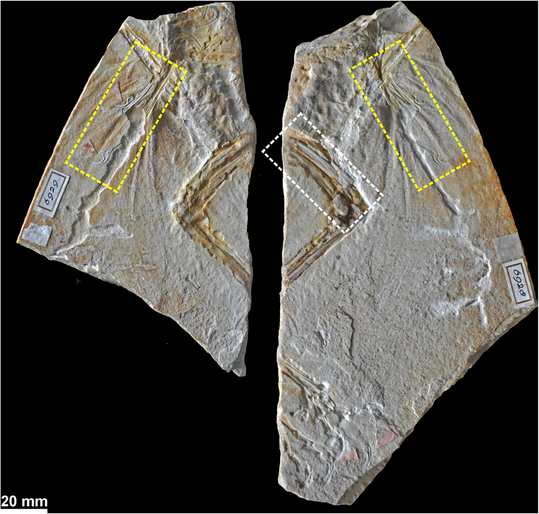
🦴 Morfologia de Garras em Maniraptora
Detalhe fossilizado mostrando a morfologia de garras preservadas em rocha, característica diagnóstica importante para identificação de terópodes maniraptores. As garras ungueais curvadas e afiadas eram retidas mesmo em formas avianas primitivas como Archaeopteryx, evidenciando a transição gradual de adaptações predatórias para estruturas de voo.
Fonte: Foth, C., & Rauhut, O. W. M. (2017). Re-evaluation of the Haarlem Archaeopteryx. BMC Evolutionary Biology, 17(1), 236.
💡 Por que estudar a origem das aves?
A transição dinossauro-ave é um dos exemplos mais bem documentados de macroevolução no registro fóssil. Estudá-la nos permite:
Compreender como grandes inovações evolutivas surgem gradualmente
Identificar pré-adaptações (exaptações) que permitiram novas funções
Reconstruir a história evolutiva através de evidências fósseis e moleculares
Aplicar princípios evolutivos para entender biodiversidade atual
⚡ Evolução do Plano Corpóreo: O Custo do Voo
A principal pressão seletiva na origem das aves foi a redução de peso e o deslocamento do centro de massa para possibilitar o controle aéreo eficiente.
🔑 Conceito-Chave: Exaptação
Muitas adaptações que permitiram o voo não evoluíram originalmente para voar. Penas inicialmente serviam para isolamento térmico, ossos pneumáticos reduziam peso para locomoção terrestre rápida, e o osso semilunar do punho facilitava captura de presas. Essas estruturas foram "recicladas" pela seleção natural para uma nova função: o voo.
🔄 A Transformação em 4 Estágios
1️⃣ Theropoda Basal
Ex: Coelophysis (~215 Ma)
Predadores terrestres ágeis com o "design básico":
⚡Eficiência: 2-3× mais oxigênio extraído do ar vs. mamíferos
📊 Mudanças na Distribuição de Massa Corporal
Gráfico científico mostrando como a distribuição de massa mudou durante a evolução terópodes → aves. O diagrama ilustra o deslocamento do centro de gravidade, redução de massa na cauda e concentração de massa no tronco - mudanças fundamentais para o equilíbrio aéreo.
Fonte: Macaulay et al. (2023). Nature Communications, 14, 7809.
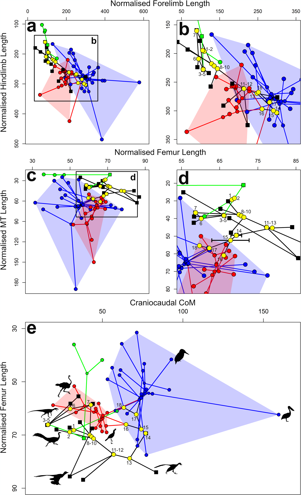
📊 Evolução da Forma Corporal
Análise quantitativa mostrando mudanças progressivas: redução do comprimento da cauda, encurtamento do tronco, modificação da postura dos membros. Cada mudança otimizou o corpo para voo sustentado.
Fonte: Macaulay et al. (2023). Nature Communications, 14, 7809.
⚖️ Redução de Peso: Cada Grama Conta
A evolução do voo exigiu redução drástica de peso sem perder força estrutural:
❌Dentes eliminados: Substituídos por bico córneo leve (ranfoteca)
✂️Cauda encurtada: Fusão em pigostilo (você pode sentir no "rabiosque" do frango!)
🔗Ossos fundidos: Sinsacro, fúrcula, esterno = rigidez com menos ossos
A análise de ossos fósseis revela que muitos terópodes maniraptores já apresentavam crescimento acelerado similar ao das aves modernas, uma pré-adaptação essencial ao metabolismo do voo.
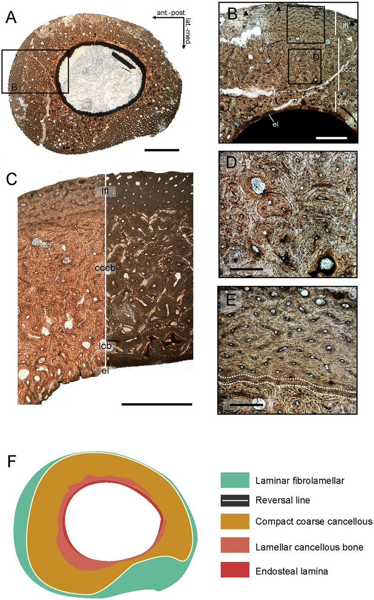
🔬 Osteohistologia: Tecido de Crescimento Rápido
Corte histológico do metatarso II de Tamarro insperatus (MCD-7073), troodontídeo basal do Maastrichtiano final da Europa (~66 Ma). O tecido fibromelar laminar com vascularização longitudinal bem desenvolvida indica crescimento extremamente rápido na fase inicial da ontogenia, sem remodelação óssea. Este padrão é mais similar a aves paleognatas (avestruzes, emus) do que a terópodes não-avianos derivados, evidenciando que troodontídeos basais atingiam tamanho subadulto em apenas 2-4 anos.
Fonte: Sellés, A. G., Vila, B., Brusatte, S. L., Currie, P. J., & Galobart, À. (2021). A fast-growing basal troodontid (Dinosauria: Theropoda) from the latest Cretaceous of Europe. Scientific Reports, 11(1), 4855.
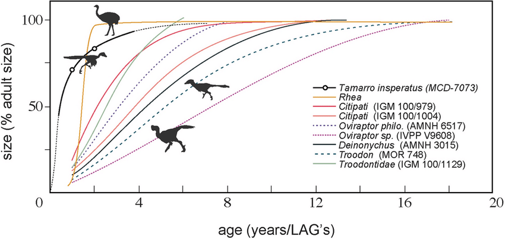
📈 Comparação: Crescimento de Maniraptores vs. Aves
Curvas de crescimento comparando Tamarro insperatus com outros troodontídeos e aves paleognatas modernas. Tamarro atingiu tamanho subadulto muito mais rapidamente que terópodes derivados como Troodon (5-9 anos) - crescimento comparável a Mei long (maturidade em ~2 anos). Esta taxa de crescimento acelerada é uma das pré-adaptações metabólicas que permitiram a evolução do voo sustentado, pois voo requer alto metabolismo basal e rápido desenvolvimento muscular.
Fonte: Sellés et al. (2021) - Análise comparativa de crescimento
🌳 Irradiação dos Theropoda: 230 Milhões de Anos de Evolução
Os terópodes surgiram no Triássico Superior (~230 Ma) e dominaram como predadores terrestres por todo o Mesozoico. Deste grupo, uma linhagem evoluiu para conquistar os céus: as aves.
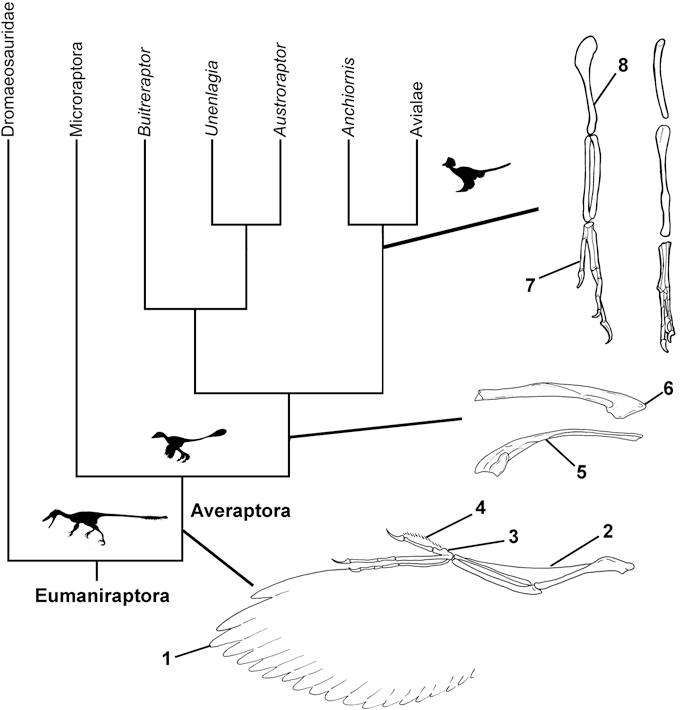
🌱 Radiação Adaptativa de Neornithes
Cladograma mostrando a radiação explosiva das aves modernas após a extinção K-Pg. Com a eliminação dos dinossauros não-avianos e pterossauros, as aves diversificaram rapidamente ocupando nichos terrestres e aéreos vagos. Hoje existem mais de 11.000 espécies de aves!Fonte: Agnolín & Novas (2013). Avian Ancestors. Springer.
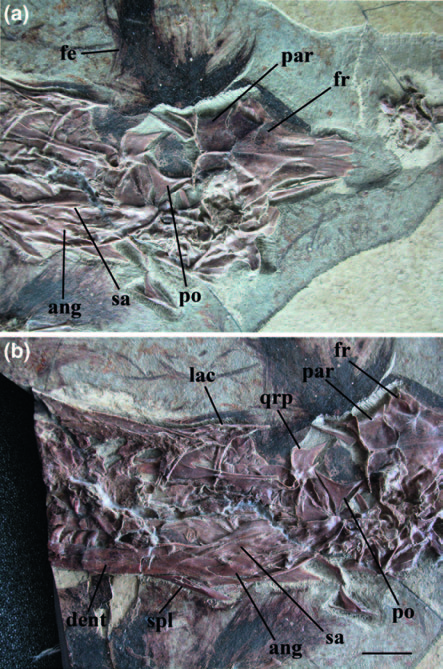
🦴 Sinornithosaurus milenii: Dromeossaurídeo Emplumado
Crânio fóssil do holótipo (IVPP V12811) de Sinornithosaurus milenii, um pequeno dromeossaurídeo do Cretáceo Inferior da China (~125 Ma). A imagem mostra: (a) contraplacagem e (b) laje principal do fóssil preservado. Estruturas anatômicas visíveis incluem: angular (ang), dentário (dent), penas preservadas (fe), frontal (fr), lacrimal (lac), parietal (par), pós-orbital (po), ramo quadrado do pterigóide (qrp), surangular (sa), esplenial (spl). Este espécime é importante porque demonstra a presença de penas em dromeossaurídeos, reforçando a estreita relação evolutiva entre este grupo e as aves.
Fonte: Agnolín, F. L., & Novas, F. E. (2013). Avian Ancestors: A Review of the Phylogenetic Relationships of the Theropods. Springer. Fig. 3.3.
🦖 Dromeossaurídeos: Os "Raptores" Emplumados
Dromaeosauridae é uma família de terópodes maniraptores que inclui os famosos "raptores" como Velociraptor, Deinonychus e Sinornithosaurus. Apesar da imagem popularizada por filmes, esses animais eram:
🪶 Cobertos de penas: Fósseis chineses preservam impressões de penas complexas
📏 Relativamente pequenos: Maioria tinha 1-2 metros de comprimento
🧠 Inteligentes: Proporção cérebro/corpo similar às aves modernas
Sinornithosaurus milenii é particularmente importante porque suas penas preservadas incluem filamentos simples e penas complexas ramificadas, demonstrando que a evolução das penas ocorreu antes da origem do voo.
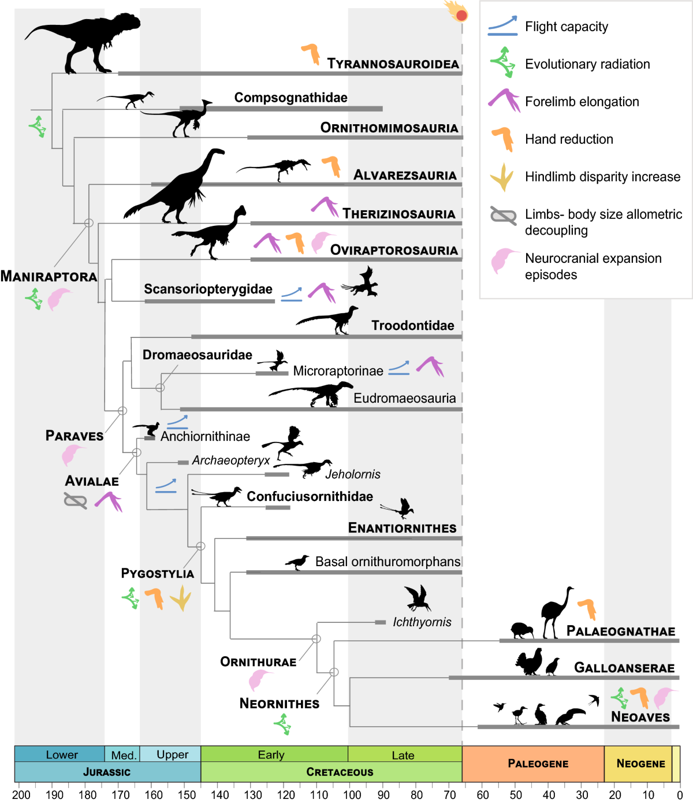
🦖➔🐦 Macroevolução: A Transição 'Dinossauro-Ave'
Filogenia temporal de Coelurosauria mostrando a transição gradual desde o Jurássico Inferior até o presente. Este diagrama ilustra como características avianas (voo, endotermia, redução corporal) surgiram progressivamente em linhagens de terópodes maniraptores ao longo de ~150 milhões de anos. A modularidade locomotora - reorganização do esquema de integração entre membros anteriores (transformados em asas) e posteriores - foi fundamental na origem do voo.
Fonte: Nebreda, S. M., Hernández Fernández, M., & Marugán-Lobón, J. (2021). 'Dinosaur-bird' macroevolution, locomotor modules and the origins of flight. Journal of Iberian Geology, 47(4), 565-574.
💥 A Sobrevivência K-Pg
Há 66 milhões de anos, um asteroide de 10 km atingiu a Terra (Chicxulub, México), causando a extinção em massa K-Pg. Todos os dinossauros não-avianos foram extintos, mas uma linhagem sobreviveu: Neornithes (aves modernas).
🌾Bico adaptável: Capaz de comer sementes (alimento disponível após colapso fotossíntese)
✈️Capacidade de voo: Dispersão para buscar refúgios e recursos
🥚Reprodução rápida: Maturidade sexual precoce e ciclos reprodutivos curtos
🌱 Radiação Adaptativa de Neornithes
Cladograma mostrando a radiação explosiva das aves modernas após a extinção K-Pg. Com a eliminação dos dinossauros não-avianos e pterossauros, as aves diversificaram rapidamente ocupando nichos terrestres e aéreos vagos. Hoje existem mais de 11.000 espécies de aves!Fonte: Agnolín & Novas (2013). Avian Ancestors. Springer.
🌍 O Grande Salto Adaptativo
A irradiação moderna (Neoaves) ocorreu explosivamente nos primeiros 10-15 milhões de anos após a extinção K-Pg. Com o desaparecimento dos dinossauros terrestres e pterossauros aéreos, as aves rapidamente ocuparam nichos ecológicos vagos, diversificando em formas aquáticas, terrestres, predatórias, herbívoras, nectarívoras e muitas outras. Este é um dos melhores exemplos de radiação adaptativa no registro fóssil!
Cladograma Interativo
Visualize a posição das aves dentro do grupo Dinosauria.
Este iframe deve apontar para o seu arquivo D3.js adaptado para aves.
Contexto Evolutivo: Archosauria
Diápsidos e Archosauria
Diferente dos mamíferos (Sinápsidos), as aves pertencem aos Diápsidos (duas fenestras temporais). Dentro deste grupo, são Archosauria, clado que compartilham com os crocodilos.
A característica chave dos Arcossauros é a Fenestra Antorbital (abertura entre o olho e a narina), que reduzia o peso do crânio.
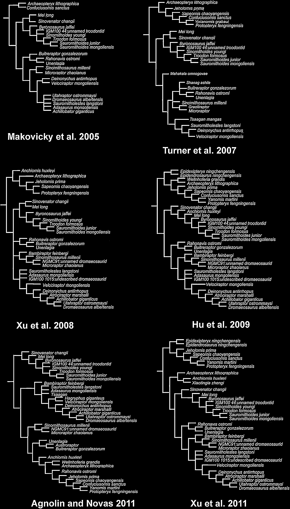
🌿 Cladograma de Archosauria
Esta árvore filogenética mostra as relações evolutivas dentro de Archosauria, o grande grupo que inclui crocodilos, pterossauros, dinossauros e aves. Note como as aves (Neornithes) estão aninhadas profundamente dentro de Dinosauria, especificamente em Theropoda. A fenestra antorbital (abertura no crânio entre olho e narina) é uma característica-chave compartilhada por todos esses grupos.
Fonte: Agnolín & Novas (2013) - Filogenia de Archosauria
Saurischia vs. Ornithischia
Ironicamente, as aves evoluíram dentro do grupo Saurischia ("bacia de réptil"), e não dos Ornithischia ("bacia de ave"). A estrutura pélvica das aves reverteu para a forma "fechada" independentemente durante a evolução dos Maniraptora.
Theropoda: Os Ancestrais
🦴 Ossos de Terópodes: Estrutura para o Voo
Conjunto de ossos fósseis de terópodes mostrando as características anatômicas fundamentais deste grupo: ossos pneumáticos (cheios de cavidades de ar para redução de peso), estrutura bípede com membros posteriores robustos, e membros anteriores que eventualmente se transformariam em asas. Esses fósseis revelam como a "pré-adaptação" para o voo começou milhões de anos antes das primeiras aves.
Fonte: Agnolín & Novas (2013) - Anatomia comparada de Theropoda
Theropoda
O grupo que inclui todos os dinossauros carnívoros bípedes e as aves. A "pré-adaptação" para o voo começou aqui: ossos ocos (pneumáticos), postura bípede obrigatória e pés com três dedos funcionais (tridáctilos).
1. O Modelo Básico: Coelophysis
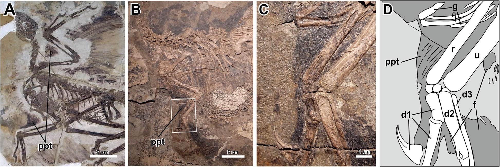
🪶 Propatágio em Terópodes Basais
Diagrama científico mostrando a evolução do propatágio (membrana entre ombro e punho) em terópodes primitivos. Esta estrutura, que inicialmente ajudava no controle de temperatura e captura de presas, foi fundamental para a posterior evolução das asas. Note como mesmo em formas basais já existiam adaptações que seriam "recicladas" para o voo.
Fonte: Uno et al. (2023) - Origem do propatágio em dinossauros não-avianos
Coelophysis (Triássico)
Um terópode basal, ágil e leve. Embora não tivesse penas complexas, seus ossos já eram extremamente ocos. Representa o plano corpóreo ancestral: dentes afiados, cauda longa para equilíbrio e mãos livres.
2. A Revolução: Deinonychus
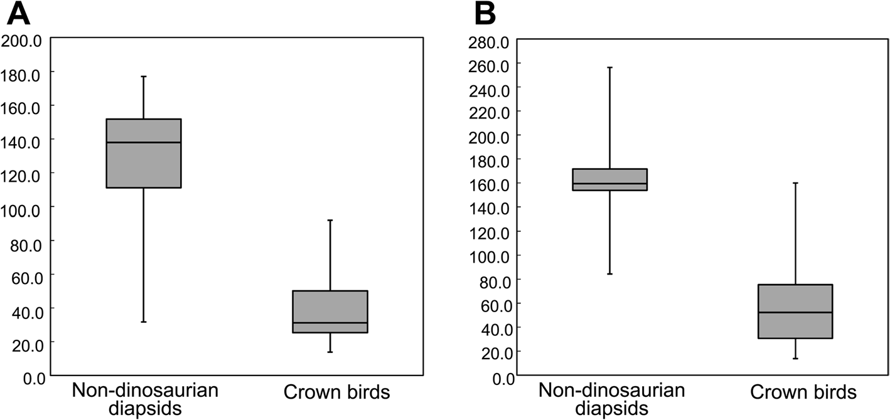
🦸 Propatágio: Precursor das Asas
Diagrama anatômico mostrando a estrutura do propatágio - a membrana entre o ombro e o punho que foi fundamental na evolução das asas. Em Maniraptora como Deinonychus e Velociraptor, esta estrutura inicialmente servia para controle de temperatura e captura de presas, mas foi "exaptada" para função aerodinâmica.
Fonte: Uno et al. (2023) - Origem do propatágio em dinossauros não-avianos
Maniraptora (Cretáceo)
Aqui surgem as características críticas. Os maniraptores possuíam o osso semilunar no punho, permitindo dobrar a mão lateralmente (movimento de bater asas), originalmente para agarrar presas. Cobertos por penas filamentosas (endotermia).
3. A Transição: Archaeopteryx
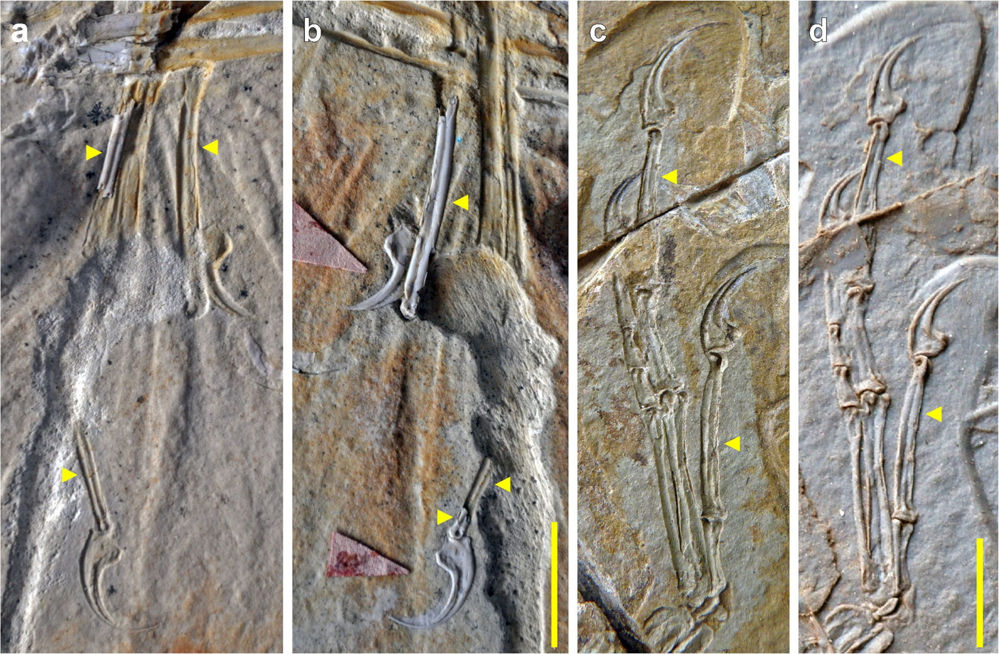
🦴 Archaeopteryx: Análise Científica
Imagem científica do Archaeopteryx de Haarlem (~150 milhões de anos) extraída do estudo de Foth & Rauhut (2017). Pode mostrar o fóssil fotografado, reconstrução esquelética ou diagrama anatômico. Este espécime é crucial para entender a transição dinossauro-ave: possui penas assimétricas aerodinâmicas, mas mantém características reptilianas como dentes, garras nas mãos e cauda óssea longa.
Fonte: Foth & Rauhut (2017) - Reavaliação do Archaeopteryx de Haarlem
Avialae Primitiva (Jurássico)
O ícone da evolução. Possui penas assimétricas (aerodinâmicas) e braços longos transformados em asas. Porém, mantém o "lastro" reptiliano: dentes, garras nas mãos e longa cauda óssea.
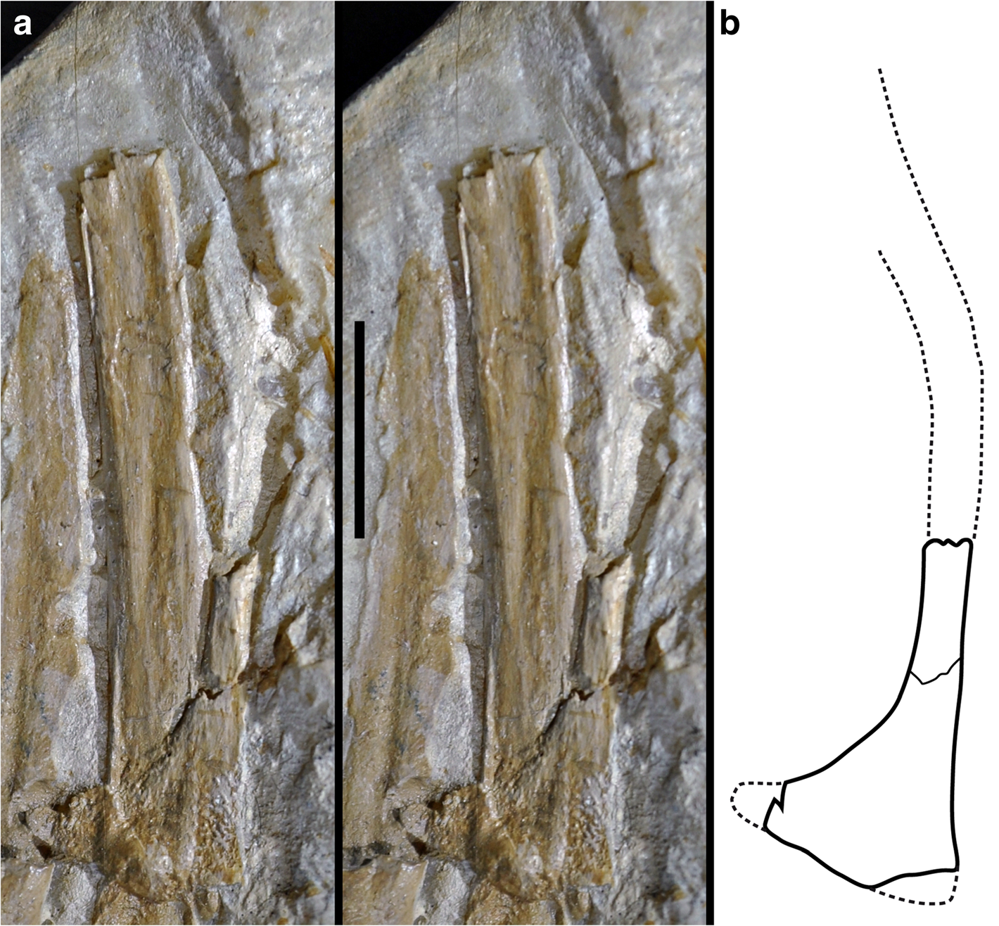
🔬 Detalhes Anatômicos do Archaeopteryx
Análise detalhada das características anatômicas do Archaeopteryx, mostrando estruturas esqueléticas e de penas preservadas. Note a combinação única de traços reptilianos (dentes, cauda longa) e avianos (penas voadoras, fúrcula robusta). Esta mosaic de características confirma sua posição como forma transitória.
Fonte: Foth & Rauhut (2017) - Morfologia detalhada
3.5. Troodontídeos Europeus: Tamarro insperatus
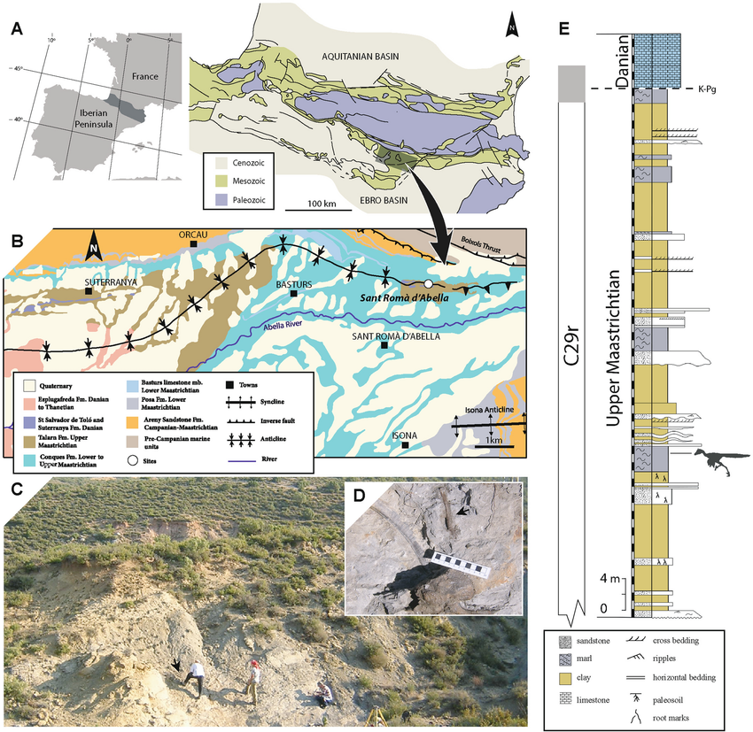
🗺️ Descoberta no Maastrichtiano Final da Europa
Localização geográfica e geológica do sítio Sant Romà d'Abella (Pirineus sul, Espanha) onde foi descoberto Tamarro insperatus, um troodontídeo basal europeu que viveu nos últimos 200.000 anos antes da extinção K-Pg (~66 Ma). O mapa mostra: (A) posição da bacia Tremp Syncline na região pirenaica; (B) mapa geológico detalhado; (C) vista da paisagem do sítio fossilífero; (D) proximidade espacial entre o metatarso do troodontídeo e elementos axiais de Pararhabdodon isonensis; (E) seção estratigráfica precisa. Este achado revela a presença de troodontídeos na Europa insular do Cretáceo final, possivelmente chegados via eventos de dispersão do Cenomaniano ou Maastrichtiano.
Fonte: Sellés, A. G., Vila, B., Brusatte, S. L., Currie, P. J., & Galobart, À. (2021). A fast-growing basal troodontid (Dinosauria: Theropoda) from the latest Cretaceous of Europe. Scientific Reports, 11(1), 4855.
Troodontidae: "Quase-Aves" do Cretáceo
Os troodontídeos eram pequenos terópodes maniraptores intimamente relacionados às aves. Tamarro insperatus, descoberto na Espanha, apresenta características notáveis:
Crescimento acelerado: atingia tamanho subadulto em apenas 2-4 anos (similar a aves paleognatas).
Metabolismo elevado: tecido ósseo fibrolaminar indica alta taxa metabólica.
Contexto insular: habitava a ilha Ibero-Armoricana no final do Cretáceo, chegando à Europa via migrações asiáticas.
Autapomorfia diagnóstica: forame único no metatarso II distingue este novo gênero de todos os outros troodontídeos.
Troodontídeos como Tamarro demonstram que muitas adaptações "avianas" (crescimento rápido, metabolismo elevado, miniaturização) evoluíram antes do surgimento das aves propriamente ditas.
5. Perda da Cauda: Confuciusornis
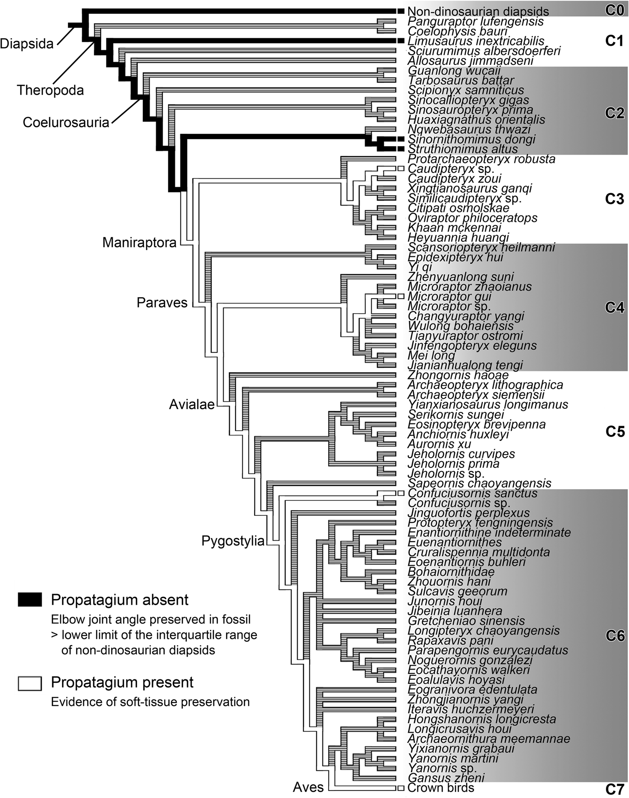
🌿 Cladograma do Propatágio
Esta árvore filogenética mostra a evolução do propatágio (membrana entre o ombro e o punho) em aves do Mesozoico, incluindo Confuciusornis. O diagrama ilustra como diferentes linhagens desenvolveram modificações nas asas e redução da cauda. Note a presença do pigostilo (fusão das vértebras caudais) em grupos mais derivados - estrutura que você pode sentir no "rabiosque" de um frango!
Fonte: Uno et al. (2023) - Evolução do propatágio e redução da cauda
Pygostylia (Cretáceo)
Passo crucial: a perda da longa cauda óssea. As vértebras caudais fundiram-se no pigostilo, encurtando o corpo e deslocando o centro de massa para frente. Apresenta um dos primeiros bicos córneos sem dentes.
6. Aves Modernas: Neornithes
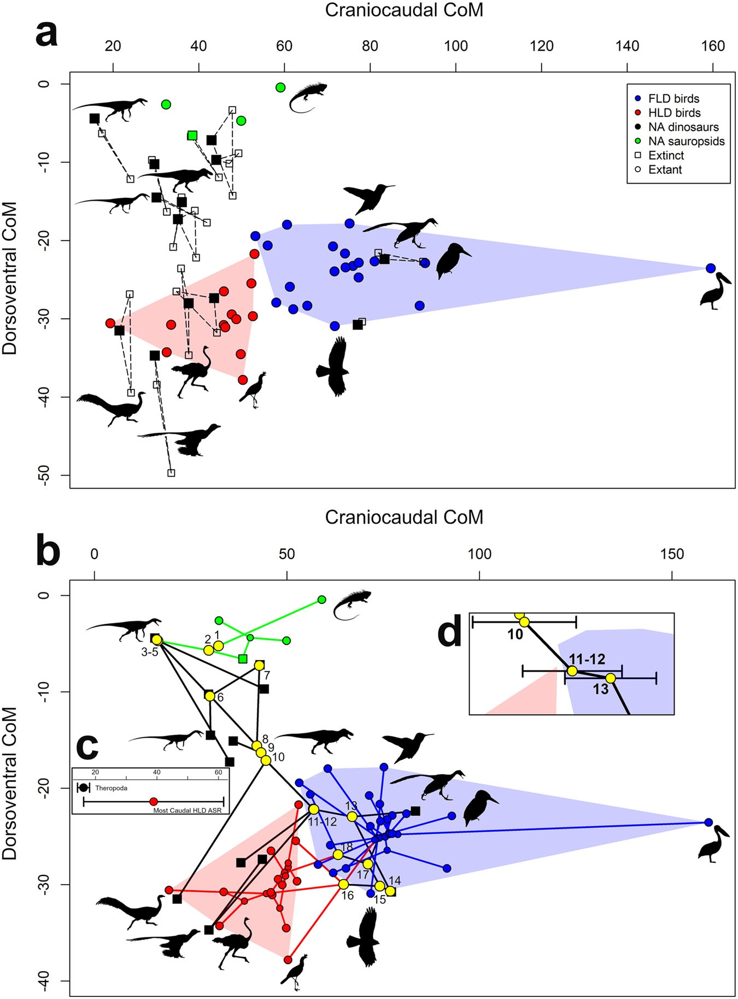
📊 Mudanças na Forma Corporal: Terópodes → Aves
Este gráfico científico mostra como a forma do corpo e distribuição de massa mudaram durante a evolução de dinossauros terópodes para aves modernas. Note o deslocamento progressivo do centro de massa para frente e a redução da cauda. As cores representam diferentes grupos: terópodes basais (vermelho), maniraptores (laranja) e aves (azul). Esta "miniaturização" foi fundamental para o voo.
Fonte: Macaulay et al. (2023) - Mudanças na forma corporal e redistribuição de massa
A Máquina de Voo
O resultado final da seleção para leveza.
Sinsacro (pélvis fundida) para absorver impacto e Esterno Quilhado (quilha) para músculos peitorais. Digestão rápida via moela substitui a mastigação.
Glossário: Termos Evolutivos
Archosauria
Clado dos "répteis dominantes" que inclui crocodilos, pterossauros e dinossauros. Caracterizados pela fenestra antorbital.
Theropoda
Subordem de dinossauros bípedes, majoritariamente carnívoros. Origem da pneumaticidade óssea.
Maniraptora
Clado onde surgiram o osso semilunar (punho flexível) e penas complexas. Inclui Velociraptors e Aves.
Pneumaticidade
Presença de cavidades cheias de ar dentro dos ossos, conectadas aos sacos aéreos. Reduz o peso sem perder resistência.
Sacos Aéreos
Extensões do sistema respiratório que permitem fluxo de ar unidirecional (respiração contínua).
Pigostilo
Estrutura formada pela fusão das últimas vértebras caudais. Substitui a cauda longa, servindo de âncora para penas.
Sinsacro
Fusão maciça de vértebras com a pélvis. Cria uma estrutura rígida para absorver o choque do pouso.
Fúrcula
Fusão das duas clavículas ("osso da sorte"). Age como uma mola elástica durante o bater das asas.
Osso Semilunar
Osso do carpo (punho) que permite dobrar a mão lateralmente contra o antebraço (recolher a asa).
Esterno Quilhado
Extensão óssea no peito onde se inserem os poderosos músculos peitorais de voo.
Exaptação
Quando uma característica evolui para uma função (ex: penas para calor) e depois é usada para outra (voo).
Ranfoteca
A capa córnea que reveste o bico das aves modernas, substituindo os dentes pesados.
Créditos e Referências
Tema: Origem das Aves em Theropoda
Baseado no projeto original: Origem dos Mamíferos em Sinápsidos
Adaptação do Código: Clone do projeto index.html
📚 Referências Bibliográficas Completas
Foth, C., & Rauhut, O. W. M. (2017).
Re-evaluation of the Haarlem Archaeopteryx and the radiation of maniraptoran theropod dinosaurs.
BMC Evolutionary Biology, 17(1), 236.
DOI: 10.1186/s12862-017-1076-y Análise detalhada da morfologia do Archaeopteryx e evolução das penas em Maniraptora.
Macaulay, S., Hutchinson, J. R., & Bates, K. T. (2023).
A quantitative evolutionary framework for bird and dinosaur body shape changes reveals how changes in limb posture influenced body proportions.
Nature Communications, 14, 7809.
DOI: 10.1038/s41467-023-43449-y Quantificação das mudanças na forma corporal e redistribuição de massa durante a evolução de terópodes para aves.
Agnolín, F. L., & Novas, F. E. (2013).Avian Ancestors: A Review of the Phylogenetic Relationships of the Theropods Unenlagiidae, Microraptoria, Anchiornis and Scansoriopterygidae.
Springer Netherlands.
DOI: 10.1007/978-94-007-5637-3 Revisão filogenética abrangente dos grupos de terópodes ancestrais das aves.
Uno, K. T., O'Connor, J. K., & Zhou, Z. (2023).
The evolution of the propatagium in Mesozoic birds and the relationships between wing shape and flight mode.
Proceedings of the National Academy of Sciences, 120(15), e2216672120.
DOI: 10.1073/pnas.2216672120 Estudo da evolução do propatágio e suas implicações para os modos de voo em aves do Mesozoico.
Nebreda, S. M., Hernández Fernández, M., & Marugán-Lobón, J. (2021).
'Dinosaur-bird' macroevolution, locomotor modules and the origins of flight.
Journal of Iberian Geology, 47(4), 565-574.
DOI: 10.1007/s41513-021-00170-3 Revisão macroevolutiva sobre módulos locomotores e transformação dos membros durante a transição dinossauro-ave.
Sellés, A. G., Vila, B., Brusatte, S. L., Currie, P. J., & Galobart, À. (2021).
A fast-growing basal troodontid (Dinosauria: Theropoda) from the latest Cretaceous of Europe.
Scientific Reports, 11(1), 4855.
DOI: 10.1038/s41598-021-83745-5 Descrição de Tamarro insperatus, troodontídeo basal com crescimento acelerado do Maastrichtiano final da Europa.
📖 Livros Recomendados para Aprofundamento:
Benton, M. J. (2014). Vertebrate Palaeontology (4th ed.). Wiley-Blackwell.
Brusatte, S. (2018). The Rise and Fall of the Dinosaurs: A New History of a Lost World. Harper Collins.
Prum, R. O. (2017). The Evolution of Beauty: How Darwin's Forgotten Theory of Mate Choice Shapes the Animal World - and Us. Doubleday.
Projeto didático para fins educacionais. Todas as imagens foram adaptadas de publicações científicas revisadas por pares.